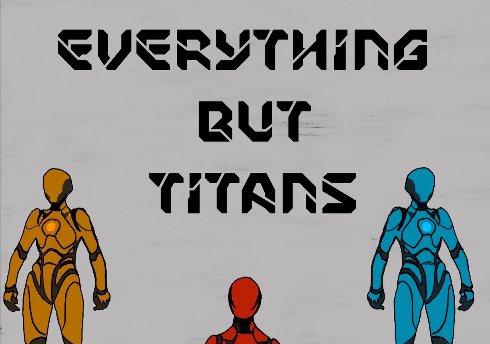
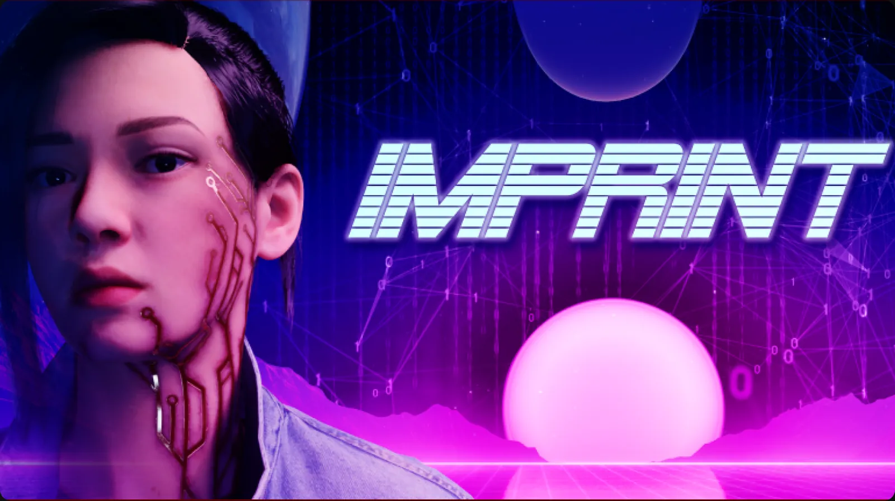
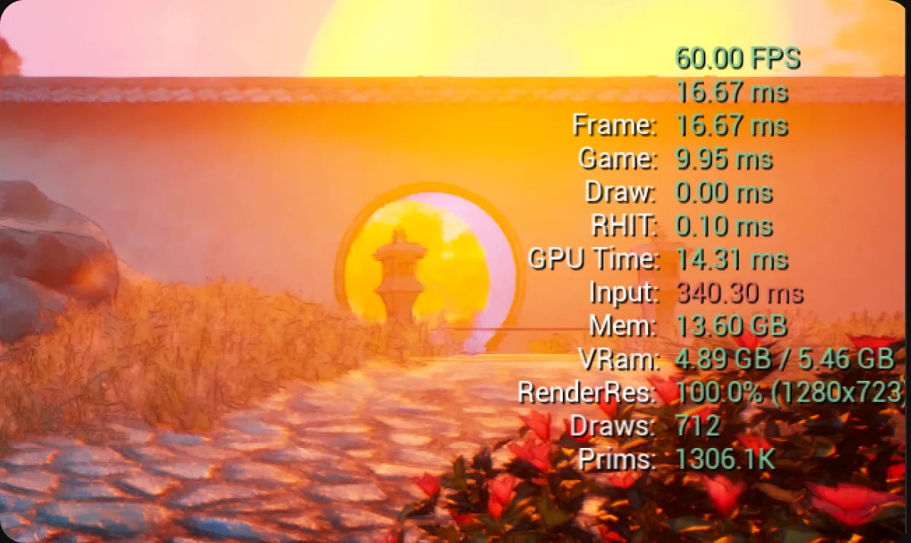
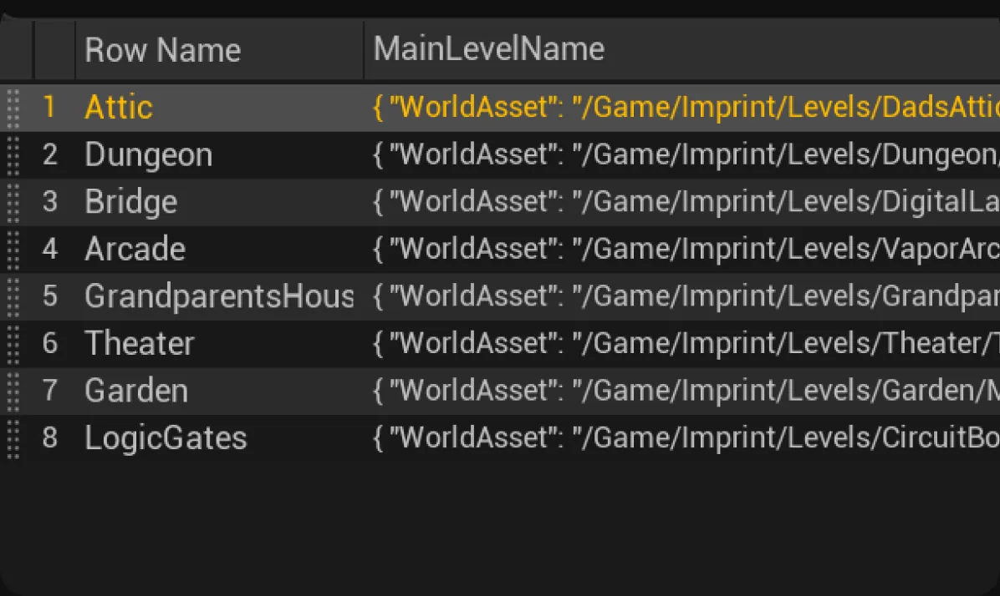

Dogwater Studios
Unreal Engine Developer
- Software:
- Unreal Engine - Perforce - Trello
- Languages:
- C++ - Unreal Blueprint
- Team Size:
- 8

Joining DogWater Studios in June 2026 as an Unreal Engine Developer for their flagship title, Imprint, I drove critical systems architecture and performance initiatives. From prototyping core mechanics to overhauling level layouts, I spearheaded the transition to a dynamic level streaming system and aggressively optimized runtime performance using Unreal Insights.
Technical Contributions
Vision-Driven Implementation: Collaborated directly with the Creative Director to translate high-level design concepts into 1-1 playable mechanics. Bridged the gap between initial paper design and production-ready technical logic.
Gameplay Flow Overhauls: Reworked existing level layouts and refactored legacy mechanics to significantly improve pacing. Designed a cohesive gameplay loop that seamlessly guides players through the environment.
Architectural Optimization: Aggressively optimized level layouts and environment architecture to hit strict performance targets. Streamlined active logic and asset placement to ensure a stable framerate without compromising the visual intent.
Iterative Systems Refinement: Audited and overhauled mechanics to better align with the project's evolving vision. Adjusted core variables and system interactions to establish a much tighter, more responsive game feel.
Technical Challenges & Solutions
Challenge: Concept to Fruition
The project required a complex interactive tool known as the "Bitflipper." The primary hurdle was translating the Creative Director's standalone written concept and external mini-app into a fully cohesive, native in-game mechanic without losing the intended user experience.
Solution
I engineered the device's logic from the ground up to create a 1-to-1 mechanical translation of the original concept. By closely collaborating with creative leadership, I integrated the external app's behavior directly into our Unreal Engine framework, ensuring the tool functioned seamlessly and naturally within the core gameplay loop.
Challenge: Multiplatform Performance Bottlenecks
Preparing the game for multiplatform and console releases required hitting highly strict hardware performance targets. We needed to drastically reduce memory overhead and eliminate frame spikes without compromising the environment's scale or visual fidelity.
Solution
I utilized Unreal Insights to aggressively profile CPU/GPU loads and identify critical rendering bottlenecks. Based on this telemetry, I introduced a comprehensive subleveling architecture, dividing massive monolithic environments into manageable, optimized chunks. This drastically reduced the active memory footprint, ensuring stable, compliant framerates across console hardware.

Challenge: Seamless World Traversal
The project's legacy transition system relied on hard level-switching, which caused significant performance hitches, memory spikes, and immersion-breaking load screens that were detrimental to console optimization.
Solution
I completely overhauled the transition logic by architecting a dynamic level streaming framework. Instead of abruptly loading whole new maps, the system intelligently streams adjacent sublevels in and out of memory based on player proximity and pacing. This eliminated hard loading screens and preserved strict memory budgets for console releases.

Blueprint UE Graph
Reflections Industry Experience
With Imprint actively in production for a Q2 2027 release, I am incredibly grateful for the daily opportunities to expand my technical skillset and push the boundaries of my engineering capabilities. I can't wait to share more detailed breakdowns of my work as we approach launch day. Until then, I invite you to explore my other projects!